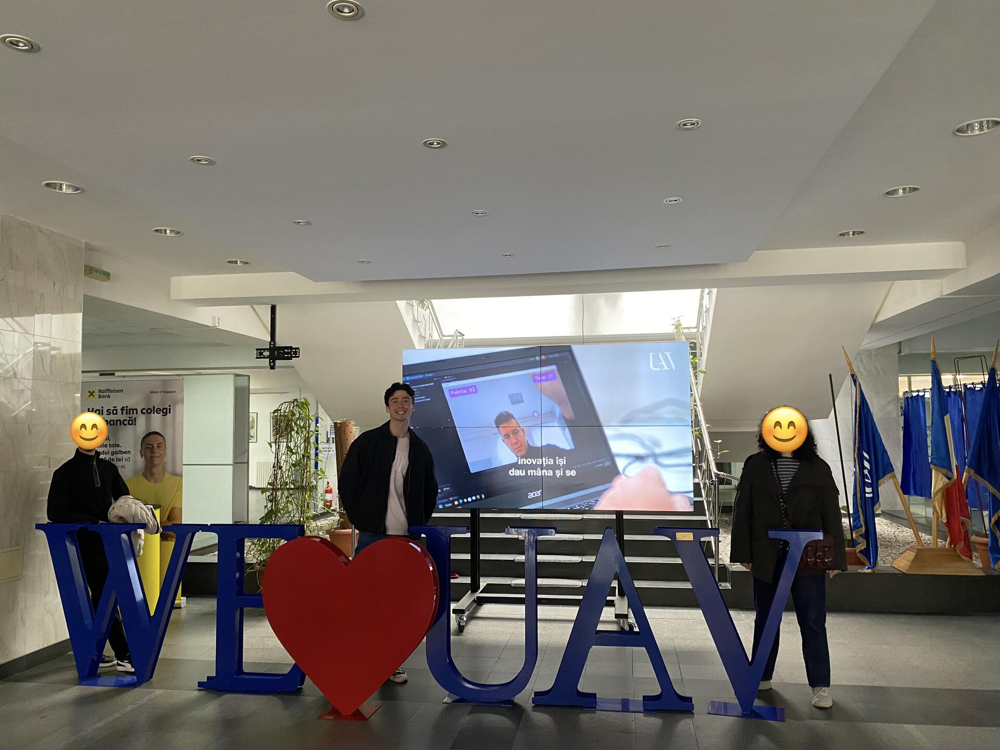
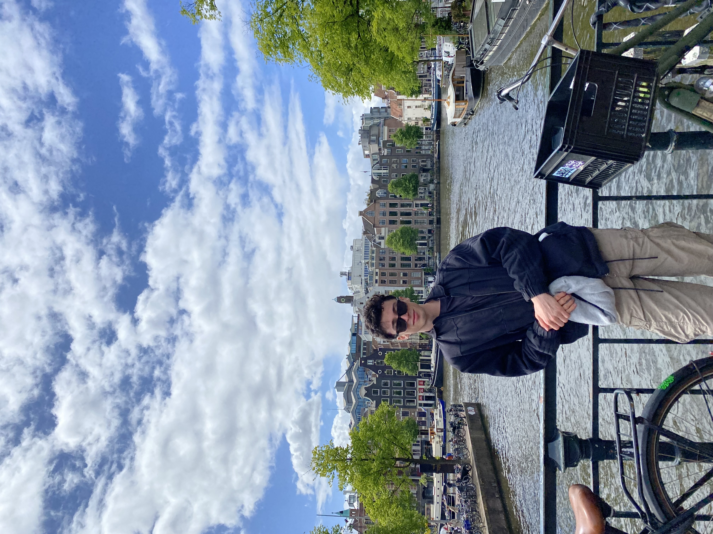
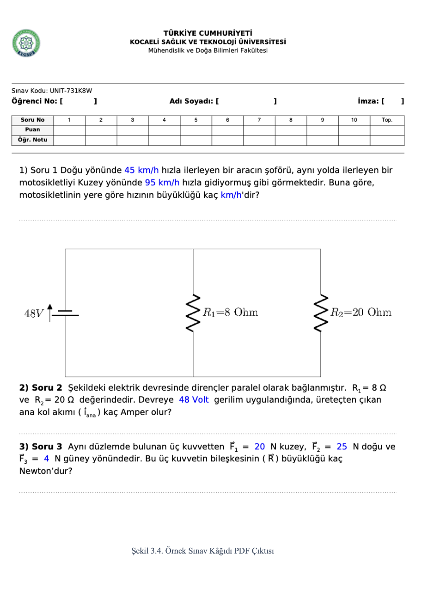
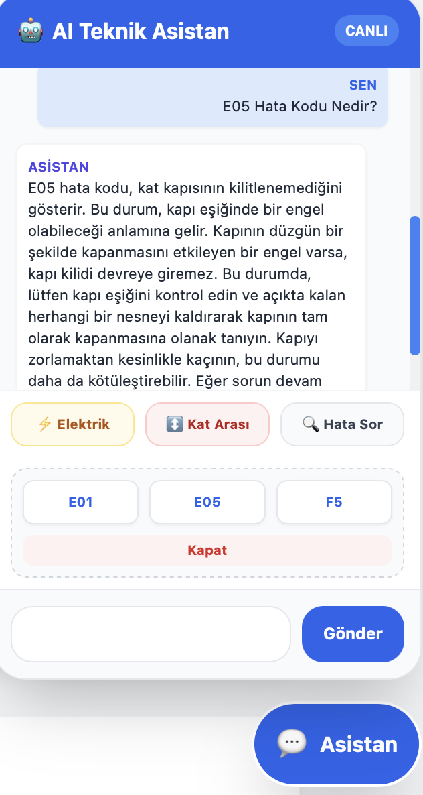
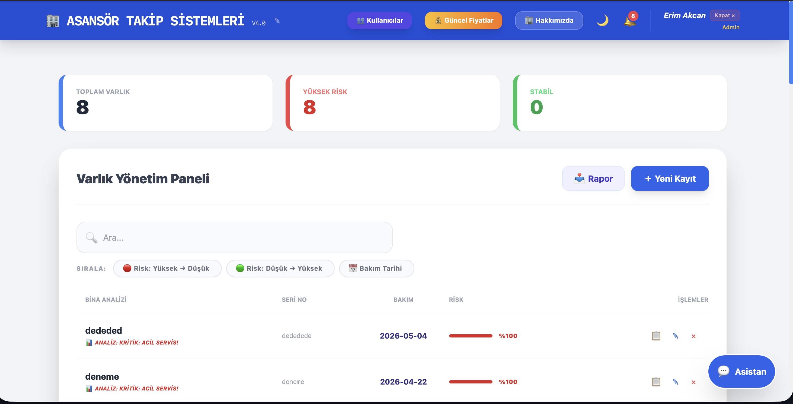
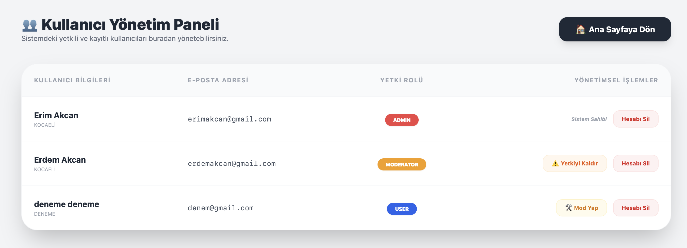
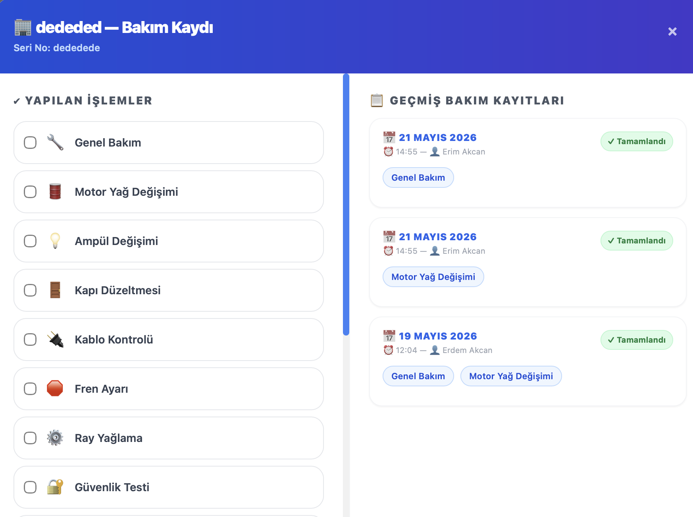
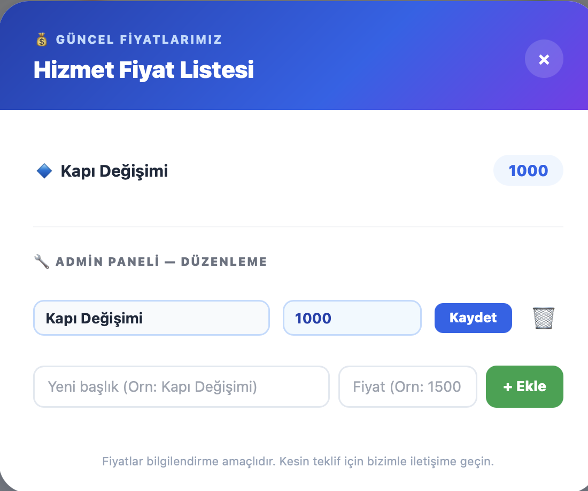
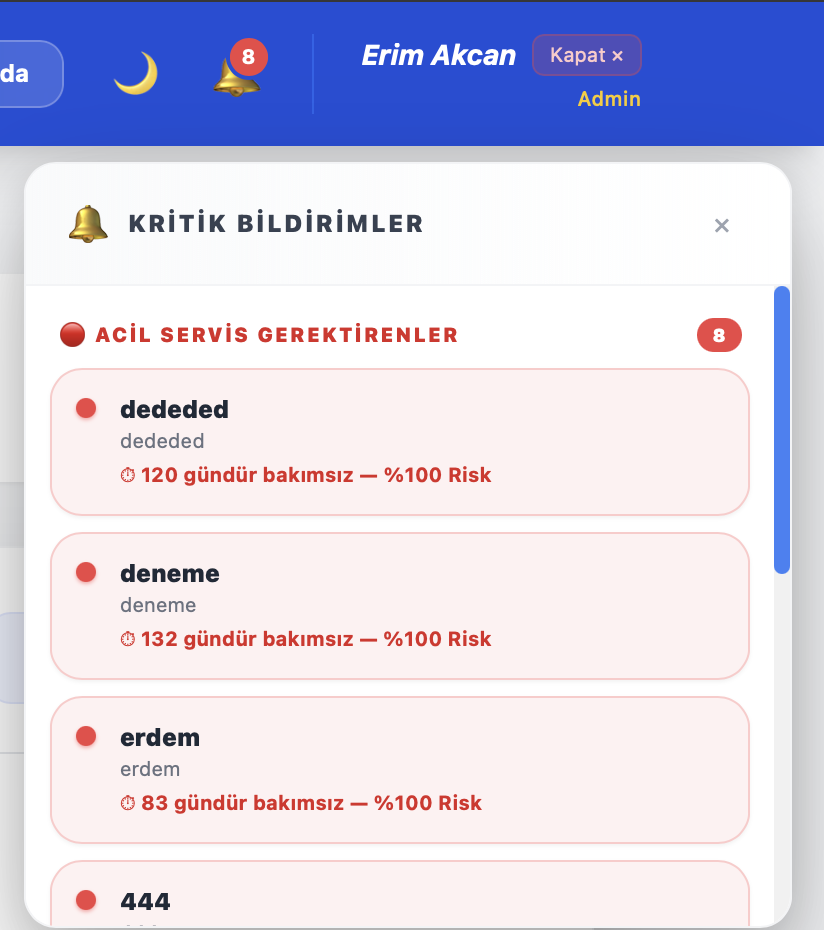

Beyond the Code



Software Engineer | Recent Graduate
See My WorkI'm a Software Engineering graduate with a growing focus on web development, and lately I've been drawn to weaving AI into the things I build rather than treating it as a separate tool.
Along the way I spent 4 months studying in Romania through Erasmus, which pushed me to adapt fast and work with people from completely different backgrounds.
I built it from scratch with plain HTML, CSS, and JavaScript, going through each part by hand so I actually understand it, not just something that happened to work.
I'm currently looking for opportunities where I can keep building that overlap between solid web fundamentals and practical AI features.


A system that takes an exam paper an instructor uploads, detects the numeric values in each question, and uses AI to change those values while keeping the underlying logic intact. The goal is to generate a unique version of the exam for every student, making it fairer and cutting down on copying. Built with a teammate, and still actively growing.



A full management system I built for my dad's elevator business (installation, repair, and maintenance). It tracks every building and elevator he services, logs maintenance history, and has separate dashboards for admin, moderator, and regular users. The part I'm most proud of is the AI assistant: it reads error codes technicians run into on site and walks them through what's wrong and what to do next, including when to just wait for the power to come back versus when to call for help right away.






Email: erimakcan@gmail.com